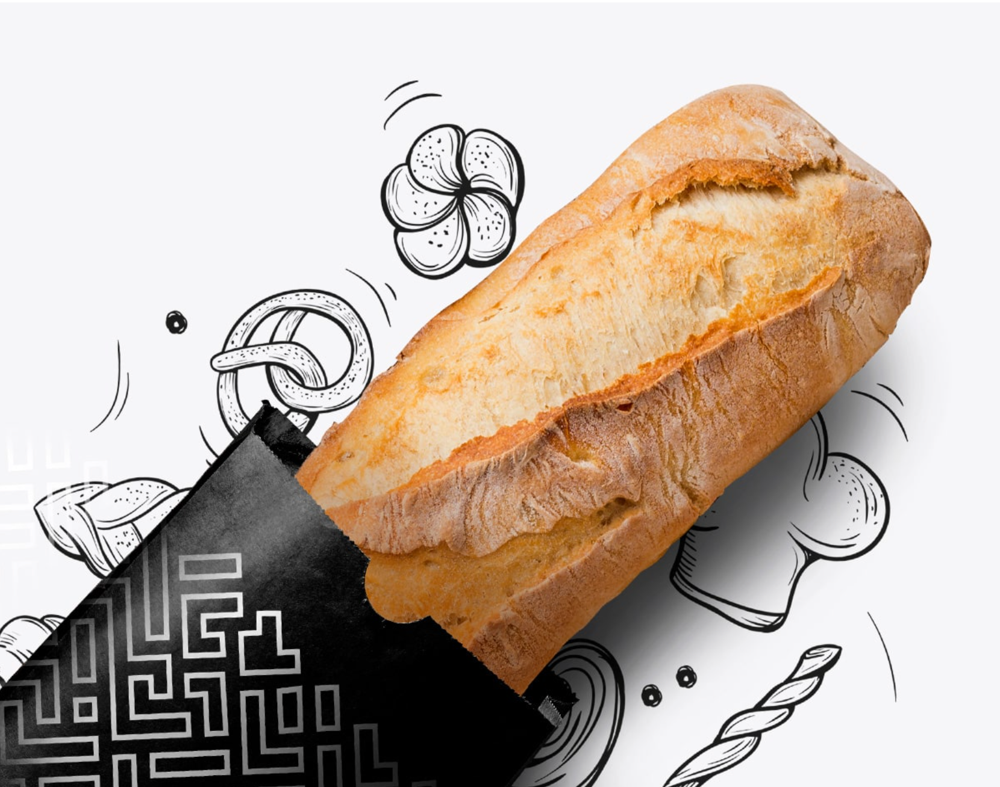

Fresh breads
handcrafted daily
Indulge in our homemade farm-style breads, baked fresh from our ovens and prepared using only the finest ingredients.
Indulge in our homemade farm-style breads, baked fresh from our ovens and prepared using only the finest ingredients.
White bread gets its goodness from the flour that is used to make it. The white flour used in white bread is produced from the ...
MoreWhite bread gets its goodness from the flour that is used to make it. The white flour used in white bread is produced from the ...
MoreWhite bread gets its goodness from the flour that is used to make it. The white flour used in white bread is produced from the ...
MoreWhite bread gets its goodness from the flour that is used to make it. The white flour used in white bread is produced from the ...
MoreFlour, water, sea salt, and leavening: four simple ingredients ThacWhen mixeo, shapeo, termenced, and baked--make one of the most basic foods that has nourished humans for thousands of years. Since such few ingredients are involved, Lwo things ser creatoread abare qualiy ingrecients and time.
Unbreached orconic wheat four whole fe flour, water, sea salt, yeast
Naturaly leavened boeuete made using a Five Points Levain dough. This baguette is crustier and chewier than the Classic Baguette
Naturally leavened bread made using the French Country dough with the additions of local Georgia pecans and Thompson raisins
Everyday table loof made using the Classic Baguette dough
Naturally leavened bread made using the French Country dough with the additions of mille: qunod, rolled oats , flax seeds , and sunflower seeds.
Whole rye flous natural leaven culture made with rye flour, pumpkin seeds, sunflower seeds, barley malt syrup, sea salt
Unbleached organic wheat floor ,wheat rye flour, water, natural leaven culture, sea salt,yeast
Unbleached organic wheat floor ,wheat rye flour, water, natural leaven culture, sea salt
Naturally leavened bread made using the Sourdough Rye dough and studded with oned black currant